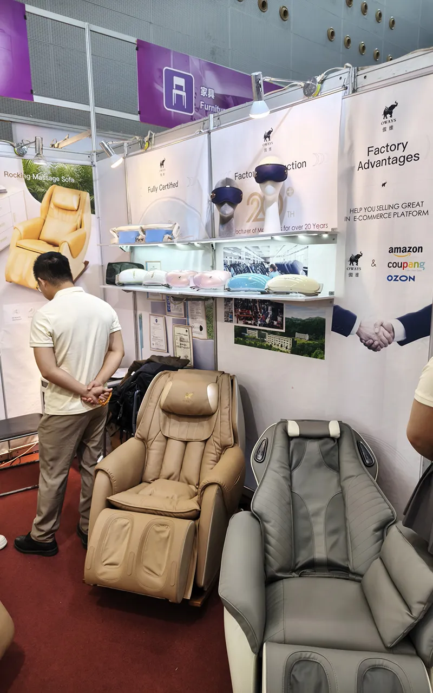

The Canton Fair: What Most People Don't Know
As a sourcing agent based in Guangdong, I go to the Canton Fair regularly. My clients always ask me: "Should I go?" My answer: it depends — but you need to know what you're walking into first.
The Canton Fair is the world's largest trade exhibition. Held twice a year in Guangzhou, it covers over 1.18 million square meters with more than 50,000 booths. Three phases, spanning about 20-25 days total with setup and teardown between phases.
Key facts:
- When: Spring (Phase 1: April 15-19) and Autumn (October)
- Where: China Import and Export Fair Complex, Pazhou, Guangzhou
- Phase 1: Electronics, machinery, building materials
- Phase 2: Consumer goods, gifts, housewares
- Phase 3: Textiles, office supplies, shoes

The Biggest Secret: Not Every Booth Is a Real Factory
Here's what nobody tells first-timers: most booths at the Canton Fair are NOT real factories. They're trading companies. And here's the thing — most of them will never admit it.
A trading company will say "We're a manufacturer" or "We have our own factory." They'll have professional booths, glossy catalogs, and polished sales pitches. They look exactly like factories. That's by design.
How to tell them apart:
Real factories:
- Will invite you to visit their factory immediately when asked
- Can tell you the exact address of their production facility
- Staff can answer technical questions about manufacturing processes
- Show production photos and videos from their own facility
Trading companies (disguised as factories):
- When asked "Where is your factory?", they say vague things like "We have factories in Guangdong"
- Can't give you a specific factory address
- Staff focused on collecting your contact info, not answering questions
- Catalogs contain products from multiple unknown sources
- Usually represent only ONE brand (carefully curated to look professional)

Questions That Separate Real Suppliers from Trading Companies
When I visit booths for my clients, I always ask:
- "Can I visit your factory after the fair?" — Real factories say "Yes, of course!" immediately. Trading companies hesitate or make excuses.
- "What's your factory address?" — Real factories give you an exact address. Trading companies give you an office address.
- "What's your MOQ for my own brand?" — Real factories know their numbers. Trading companies often can't answer or give unrealistic numbers.
- "Do you export to [your country]?" — Experienced exporters know the regulations for specific markets. Trading companies often sell domestically only.

The Time Reality: Plan Accordingly
One phase at the Canton Fair runs about 5 days. The ENTIRE session — all three phases with setup and teardown — is about 20-25 days.
If you want to seriously cover multiple phases, you need at least 2-3 weeks. Most first-timers think 3 days is enough. It's not — unless you're only interested in one phase and you've done your homework.

Do You Actually Need to Go?
You should go if:
- You're launching a new product line and need to see options in person
- You're in a category with high customization needs (furniture, electronics)
- You want to verify existing suppliers face-to-face
You might not need to go if:
- You're buying established products with standard specifications
- You have a trusted sourcing agent who can visit factories for you
- Your order quantities are small and can be verified through samples

Questions I Get Asked the Most
Final Thoughts
The Canton Fair is overwhelming by design. 50,000 booths, 20+ days, thousands of trading companies pretending to be factories.
Going alone without a plan is a waste of time and money. But with the right preparation — or the right sourcing agent — you can cut through the chaos and find real suppliers.
That's what I do for my clients. Whether you need someone to prepare your visit, accompany you at the fair, or visit booths on your behalf — I can help.
Ready to make the Canton Fair work for you?